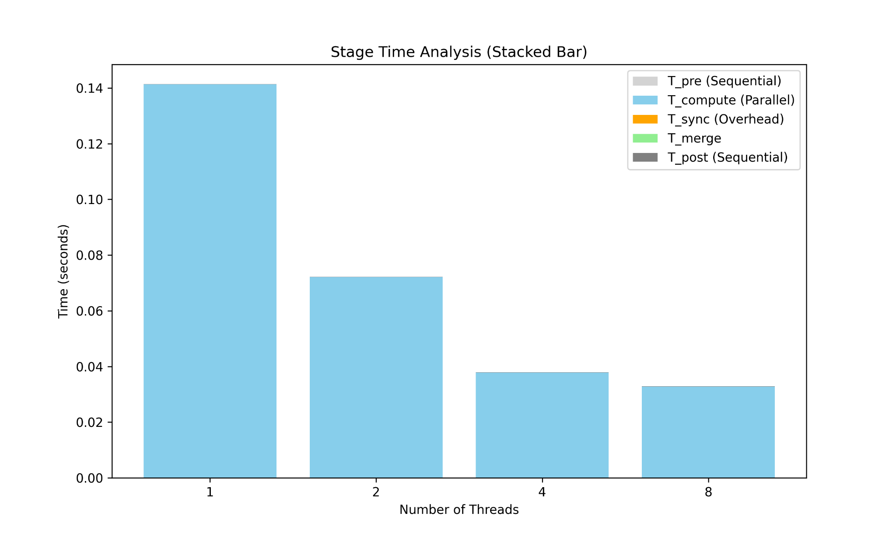

워커 수를 늘리면 그만큼 빨라질 거라고 흔히 가정하지만, 실제로 그런지 직접 측정해본 경우는 많지 않습니다.
코어를 다 쓰는 것(활용률)과 실제로 빨리 끝나는 것(실행시간 단축)이 같은 말인지도 확실하지 않았습니다.
차량 추종 위험도를 Monte Carlo로 계산하는 CPU-bound 워크로드를 설계하고, Sequential/Thread/Process/Hybrid/Pipeline 5가지 구조를 팀원들과 구현했습니다.
그중 초기 시스템 설계 배경과 병렬화 모델의 타당성을 정리하는 부분, 중간 발표를 맡았고, trial 단위 deterministic seed 계산과 checksum 검증 체계를 설계했습니다.
실험은 Linux 환경에서 1.2억 trial × 50 step 조건으로 1/2/4/8 worker 각각 직접 돌렸고, 반복 실험 수치를 대조·검수한 뒤 Speedup·Efficiency·CPU 활용률 그래프를 직접 그렸습니다.
CPU-bound Monte Carlo 워크로드를 C로 구현 (1.2억 trial 규모)
POSIX pthread, Process/IPC를 이용해 5가지 처리 구조(Sequential, Thread, Process, Hybrid, Pipeline)를 각각 구현
Strong Scaling 기준으로 worker 수를 늘려가며 실행 시간과 자원 사용률을 측정
4-worker에서는 자원 포화도가 높게 나왔는데, 8-worker로 올리니 오히려 효율이 떨어졌습니다.
처음엔 측정 오류인가 싶어서 반복 실험으로 수치를 다시 대조·검수했는데, 같은 패턴이 재현됐습니다.
즉 코어를 더 쓴다고 실행시간이 그만큼 줄어드는 게 아니라는 걸 숫자로 확인한 셈입니다.
1.2억 trial 규모의 스케일링 측정을 완료했고, 4-worker 환경에서 92.5~94.0% 수준의 효율을 확인했습니다.